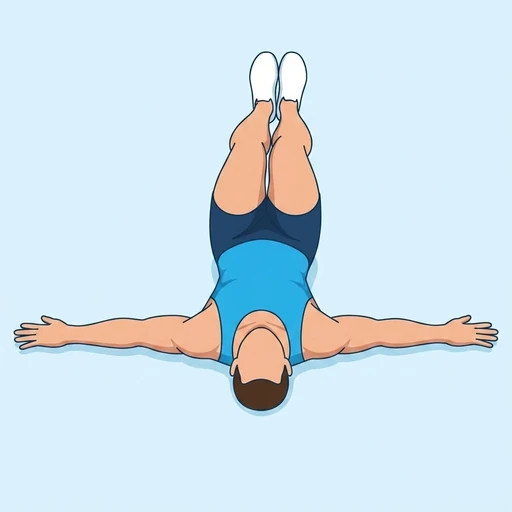

Supine Windshield Wipers
A lying rotation drill: with the knees bent or the legs raised, both legs swing from side to side like wipers while the shoulders stay pinned to the floor.
Core · Bodyweight · Intermediate


Muscles worked by the Supine Windshield Wipers
Primary
Secondary
Also called: oblique, obliques, side abs, external oblique, internal oblique, abs.
Equipment
No equipment — this is a bodyweight exercise.
How to do the Supine Windshield Wipers
- Lie on your back with the arms out to the sides and the knees bent over the hips.
- Brace the trunk so the lower back does not lift off the floor.
- Lower both legs together towards one side as far as the shoulders stay down.
- Bring them back through the centre and lower to the other side.
- Keep alternating for the desired number of repetitions.
Form tips
- Both shoulders stay on the floor; the range is defined by them, not by the legs.
- Keep the knees together so the pelvis moves as one unit.
- Straighten the legs for a much harder version once the control is there.
At a glance
| Body part | Core |
|---|---|
| Category | Strength |
| Force type | Dynamic |
| Mechanic | Compound |
| Difficulty | Intermediate |
| Equipment | Bodyweight |
| Goals | Endurance, Strength |
| Tags | Core, Calisthenics |
| MET | 5.0 (metabolic equivalent, for calorie estimates) |
| Unilateral | No |
| Bodyweight | Yes |
| Dataset id | supine-windshield-wipers |
Supine Windshield Wipers in German & Spanish
| German | Scheibenwischer in Rückenlage |
|---|---|
| Spanish | Limpiaparabrisas Tumbado |
Descriptions, instructions and tips ship in all three languages in the JSON.
Related exercises
Exercise data (JSON)
The record below is exactly what exercises.json ships for this exercise — names, descriptions, instructions and tips in English, German and Spanish.
{
"id": "supine-windshield-wipers",
"name_en": "Supine Windshield Wipers",
"name_de": "Scheibenwischer in Rückenlage",
"name_es": "Limpiaparabrisas Tumbado",
"description_en": "A lying rotation drill: with the knees bent or the legs raised, both legs swing from side to side like wipers while the shoulders stay pinned to the floor.",
"description_de": "Eine Rotationsübung in Rückenlage: mit gebeugten oder angehobenen Beinen schwingen beide Beine wie Scheibenwischer von Seite zu Seite, während die Schultern am Boden bleiben.",
"description_es": "Un ejercicio de rotación tumbado: con las rodillas flexionadas o las piernas elevadas, ambas piernas oscilan de lado a lado como limpiaparabrisas mientras los hombros permanecen pegados al suelo.",
"category": "strength",
"force_type": "dynamic",
"mechanic": "compound",
"difficulty": "intermediate",
"body_part": "core",
"primary_muscles": [
"obliques",
"rectus_abdominis"
],
"secondary_muscles": [
"hip_flexors",
"transverse_abdominis"
],
"goals": [
"endurance",
"strength"
],
"tags": [
"core",
"calisthenics"
],
"is_unilateral": false,
"is_bodyweight": true,
"instructions_en": [
"Lie on your back with the arms out to the sides and the knees bent over the hips.",
"Brace the trunk so the lower back does not lift off the floor.",
"Lower both legs together towards one side as far as the shoulders stay down.",
"Bring them back through the centre and lower to the other side.",
"Keep alternating for the desired number of repetitions."
],
"instructions_de": [
"Leg dich auf den Rücken, die Arme zur Seite gestreckt, die Knie über den Hüften gebeugt.",
"Spann den Rumpf an, damit der untere Rücken nicht vom Boden abhebt.",
"Senk beide Beine gemeinsam zu einer Seite, so weit die Schultern unten bleiben.",
"Führ sie durch die Mitte zurück und senk sie zur anderen Seite.",
"Wechsle weiter für die gewünschte Anzahl an Wiederholungen."
],
"instructions_es": [
"Túmbate boca arriba con los brazos abiertos a los lados y las rodillas flexionadas sobre las caderas.",
"Aprieta el tronco para que la zona lumbar no se despegue del suelo.",
"Baja ambas piernas juntas hacia un lado mientras los hombros sigan apoyados.",
"Devuélvelas por el centro y bájalas hacia el otro lado.",
"Sigue alternando las veces indicadas."
],
"tips_en": [
"Both shoulders stay on the floor; the range is defined by them, not by the legs.",
"Keep the knees together so the pelvis moves as one unit.",
"Straighten the legs for a much harder version once the control is there."
],
"tips_de": [
"Beide Schultern bleiben am Boden; sie definieren den Bewegungsradius, nicht die Beine.",
"Halte die Knie zusammen, damit sich das Becken als eine Einheit bewegt.",
"Streck die Beine für eine deutlich schwerere Variante, sobald die Kontrolle sitzt."
],
"tips_es": [
"Ambos hombros se quedan en el suelo; son ellos los que definen el recorrido, no las piernas.",
"Mantén las rodillas juntas para que la pelvis se mueva como una unidad.",
"Estira las piernas para una versión mucho más difícil cuando tengas el control."
],
"met": 5.0,
"images": {
"flat": {
"start": "images/flat/supine-windshield-wipers-start.webp",
"peak": "images/flat/supine-windshield-wipers-peak.webp"
}
}
}Fetch just this exercise
const { exercises } = await fetch(
"https://exercise-dataset.com/exercises.json"
).then(r => r.json());
const ex = exercises.find(e => e.id === "supine-windshield-wipers");Free for personal and commercial in-app use with attribution (“Exercise data by RepDB”) — see the license and ready-made attribution snippets. Redistributing the data as a dataset or API is not permitted.